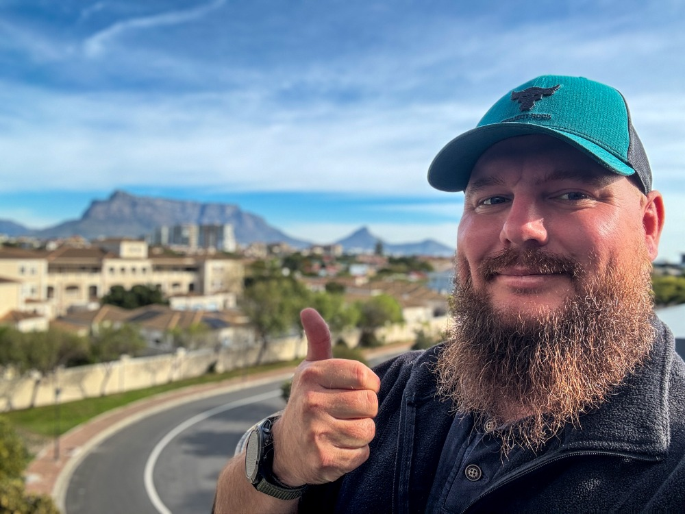

DevOps Engineer
I am a DevOps Engineer specializing in Azure DevOps, Kubernetes, Docker, Jira, Confluence, Dynatrace, Ansible, and OpenShift.
I design and implement scalable CI/CD pipelines, infrastructure as code solutions, and automation frameworks that drive operational excellence across development and production environments.
Committed to continuous improvement, I embrace emerging technologies such as Agentic coding and advocate for the adoption of modern DevOps and Agile methodologies to accelerate delivery, enhance system reliability, and improve team collaboration.
Learn More About Me Get in Touch Explore my GitHub repositories showcasing various DevOps projects, CI/CD pipelines, and automation scripts.
Visit My GitHub ProfileEmail: stewart@stewart-burton.com
Connect on LinkedIn